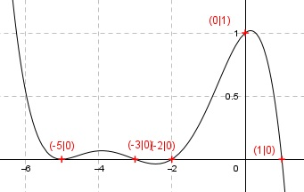

Aufgabe 116 Der Graph einer ganzrationalen Funktion 5. Grades geht durch den Punkt (0|1), berührt die x-Achse bei -5 und wechselt bei x = 1, -2 und -3 das Vorzeichen. Wie lautet seine Funktionsgleichung?  Allgemeine Form einer ganzrationalen Funktion 5. Grades: f(x) = ax5 + bx4 + cx3 + dx2 + ex + f f’(x) = 5ax4 + 4bx3 + 3cx2 + 2dx + e f’’(x) = 20ax3 + 12bx2 + 6cx + 2d 6 Bedingungen : 1. Geht durch (0|1) bedeutet: f(0) = 1 --> a * 05 + b * 04 + c * 03 + d * 02 + e * 0 + f = 1 --> f = 1 2. Berührt die x-Achse bei -5 bedeutet zum einen: (f = 1 eingesetzt) f(-5) = 0 --> a * (-5)5 + b * (-5)4 + c * (-5)3 + d * (-5)2 + e * (-5) + 1 = 0 --> -3125a + 625b - 125c + 25d - 5e + 1 = 0 I 3. Berührt die x-Achse bei - 5 bedeutet zum anderen: f’(-5) = 0 --> 5a * (-5)4 + 4b * (-5)3 + 3c * (-5)2 + 2d * (-5) + e = 0 --> 3125a - 500b + 75c - 10d + e = 0 II 4. Wechselt bei 1 das Vorzeichen bedeutet: (f = 1 eingesetzt) f(1) = 0 --> a * 15 + b * 14 + c * 13 + d * 12 + e * 1 + 1 = 0 --> a + b + c + d + e + 1 = 0 III 5. Wechselt bei -2 das Vorzeichen bedeutet: (f = 1 eingesetzt) f(-2) = 0 --> a * (-2)5 + b * (-2)4 + c * (-2)3 + d * (-2)2 + e * (-2) + 1 = 0 --> -32a + 16b - 8c + 4d - 2e + 1 = 0 IV 6. Wechselt bei -3 das Vorzeichen bedeutet: (f = 1 eingesetzt) f(-3) = 0 --> a * (-3)5 + b * (-3)4 + c * (-3)3 + d * (-3)2 + e * (-3) + 1 = 0 --> - 243a + 81b - 27c + 9d - 3e + 1 = 0 V II + III * (-1) 3125a - 500b + 75c - 10d + e = 0 -a - b - c - d - e - 1 = 0 ------------------------------------- 3124a - 501b + 74c - 11d - 1 = 0| +1 3124a - 501b + 74c - 11d = 1 VI III * 2 + IV 2a + 2b + 2c + 2d + 2e + 2 = 0 -32a + 16b - 8c + 4d - 2e + 1 = 0 ---------------------------------- -30a + 18b - 6c + 6d + 3 = 0 |-3 -30a + 18b - 6c + 6d = -3 VII III * 3 + V 3a + 3b + 3c + 3d + 3e + 3 = 0 -243a + 81b - 27c + 9d - 3e + 1 = 0 ------------------------------------ -240a + 84b - 24c + 12d + 4 = 0 |-4 -240a + 84b - 24c + 12d = -4 VIII III * 5 + I 5a + 5b + 5c + 5d + 5e + 5 = 0 -3125a + 625b - 125c + 25d - 5e + 1 = 0 ---------------------------------------- -3120a + 630b - 120c + 30d + 6 = 0 |-6 -3120a + 630b - 120c + 30d = -6 IX VII * (-2) + VIII 60a - 36b + 12c - 12d = 6 -240a + 84b - 24c + 12d = -4 ----------------------------- -180a + 48b - 12c = 2 X VI * 6 + VII * 11 18744a - 3006b + 444c - 66d = 6 -330a + 198b - 66c + 66d = -33 ---------------------------------- 18414a - 2808b + 378c = -27 XI VII * (-5) + IX 150a - 90b + 30c - 30d = 15 -3120a + 630b - 120c + 30d = -6 -------------------------------- -2970a + 540b - 90c = 9 XII X * 31,5 + XI -5670a + 1512b - 378c = 63 18414a - 2808b + 378c = -27 ---------------------------- 12744a - 1296b = 36 XIII X * (-7,5) + XII 1350a - 360b + 90c = -15 -2970a + 540b - 90c = 9 --------------------------- -1620a + 180b = -6 XIV XIII * 180 + XIV * 1296 2293920a - 233280b = 6480 -2099520a + 233280b = -7776 ---------------------------- 194400a = -1296 |:194400 1296 1 a = - ---------- = - ----- 194400 150 a = -1/150 in XIII eingesetzt: 12744 *- 1/150 - 1296b = 36 |*150 12744 - 194400b = 5400 |+ 12744 -194400b = 18144 |:(-194400) 18144 7 b = - ---------- = - ---- 194400 75 a = -1/150 und b = -7/75 in X eingesetzt: -180 * (- 1/150) + 48 * (-7/75) - 12c = 2 |*150 180 - 672 - 1800c = 300 -492 - 1800c = 300 | +492 -1800c = 792 |:-1800 792 11 c = - ------- = - ---- 1800 25 a = -1/150 und b = -7/75 und c = -11/25 in VII eingesetzt: -30 * (- 1/150) + 18 * (-7/75) - 6 * (-11/25) + 6d = -3 |*150 30 - 252 + 396 + 900d = -450 174 + 900d = -450 |-174 900d = -624 |:900 624 52 d = - ------ = - ---- 900 75 a = -1/150 und b = -7/75 und c = -11/25 und d = -52/75 in III eingesetzt: -1/150 - 7/75 - 11/25 - 52/75 + e + 1 = 0 |*150 1 - 14 - 66 - 104 + 150e + 150 = 0 -35 * 150e = 0 |+35 150e = 35 |:150 35 7 e = ----- = ---- 150 30 Gesuchte Funktionsgleichung: f(x) = -(1/150)x5 - (7/75)x4 - (11/25)x3 -(52/75)x2 + (7/30)x + 1